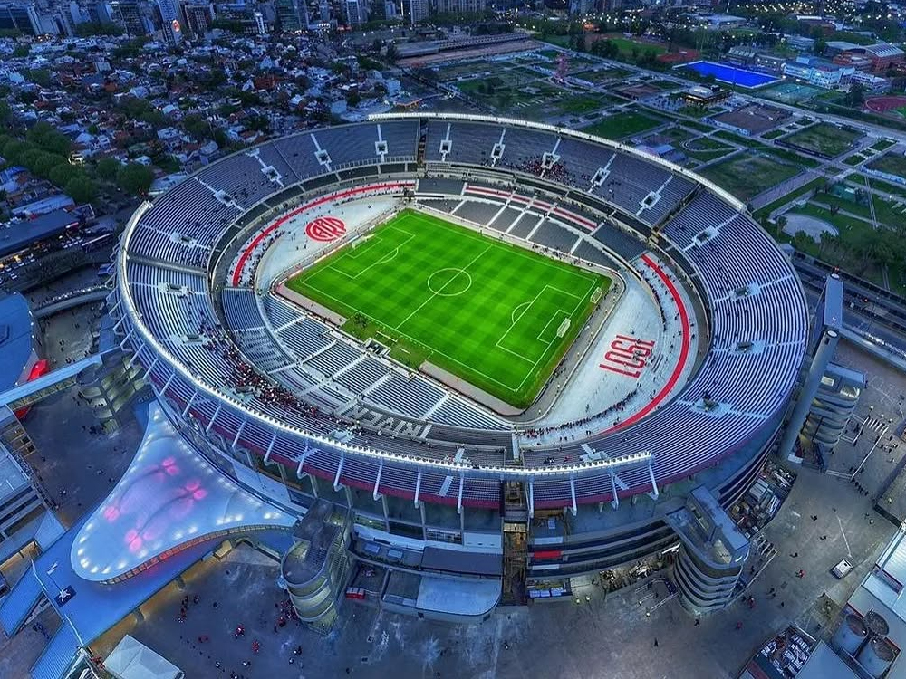
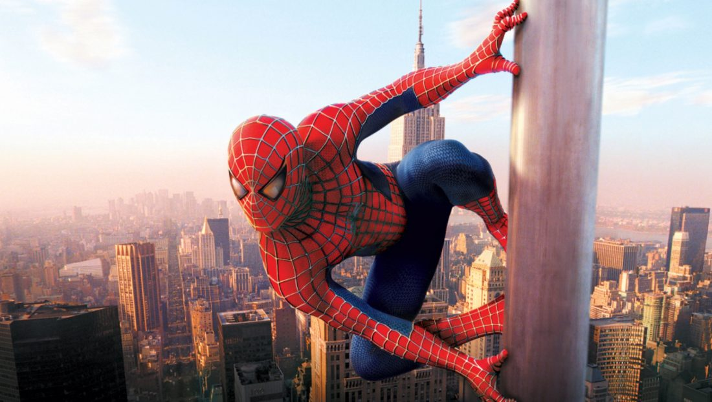
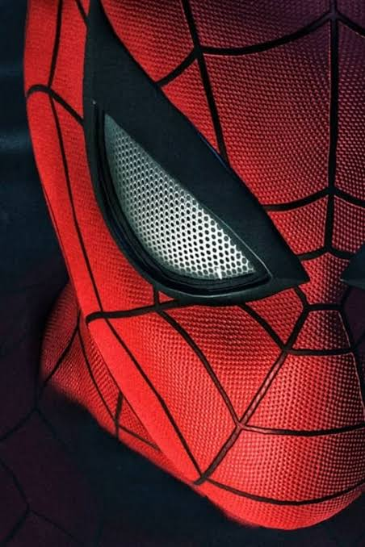
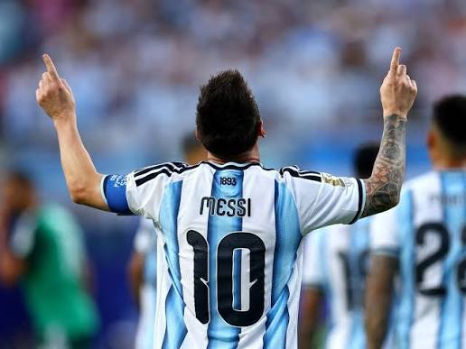
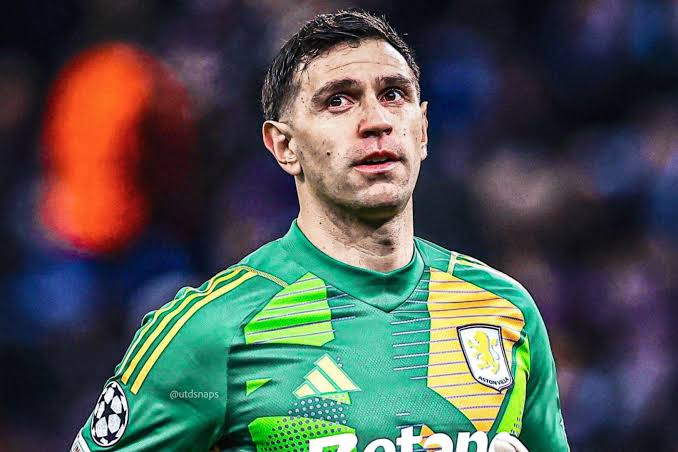

Galería




Una experiencia inspirada en el héroe más famoso de Marvel y la pasión por la Selección Argentina.
Explorar
Argentina: Campeona del Mundo La Selección Argentina es una de las más grandes potencias del fútbol mundial y actualmente es la campeona del mundo tras conquistar la Copa Mundial de la FIFA 2022 en Qatar. Con una historia llena de pasión, talento y gloria, la Albiceleste ha levantado tres Copas del Mundo: 1978, 1986 y 2022. A lo largo de los años, figuras legendarias como Diego Maradona y Lionel Messi han representado el orgullo de un país que vive el fútbol con emoción única. Argentina continúa siendo un símbolo de grandeza, tradición y excelencia dentro del deporte más popular del mundo.

Capitán y leyenda del fútbol mundial.

Arquero campeón del mundo.
Una de las grandes figuras del ataque argentino.

